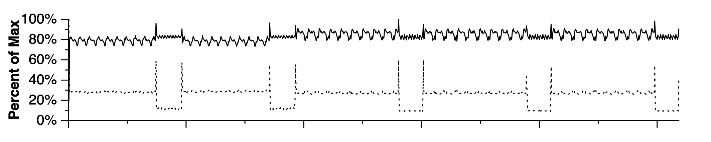
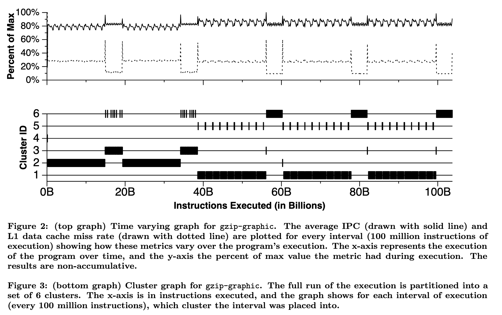
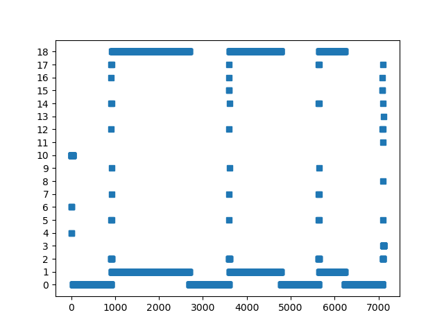
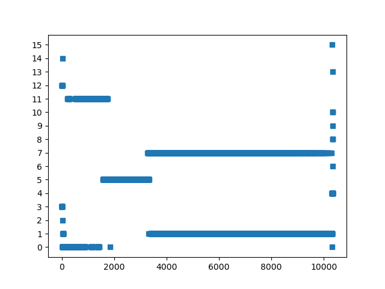
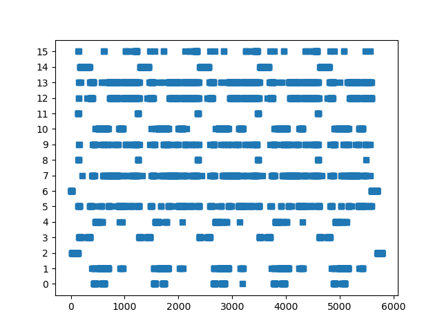

如何进行条件分支预测器实验¶
背景¶
最近针对各种条件分支预测器（Conditional Branch Predictor）做了在各种 benchmark 上的实验，在此记录一下做这个实验的流程。
流程¶
说到做条件分支预测器实验，到底是做什么呢？其实就是针对未来的处理器中的条件分支预测器的设计，在提前准备好的一些 benchmark 上进行模拟，观察它的预测准确性。既然是未来的处理器，那么硬件肯定是没有的，如果直接用 RTL 去实现新的预测器，再用 RTL 仿真，结果固然准确，但这还是太复杂并且太慢了。所以在前期的时候，首先会构建一个单独的条件分支预测器的实验环境，在只考虑条件分支指令、不考虑其他指令的情况下，单纯来观察预测的效果，从而可以实现比较快速的设计迭代。
为了达成这个目的，需要：
- 提前准备好一些 benchmark，提取出这个 benchmark 中所涉及到的条件分支 trace，以及条件分支预测器所需要的其他信息
- 为了进一步缩短模拟的时间和 trace 的大小，利用 SimPoint 等技术来减少要模拟的指令条数
- 搭建一个条件分支预测器模拟器，在上一步提取出来的 trace 中模拟条件分支预测器的执行，从而得到结果
下面按照这个顺序，分别来讨论一下这个流程。
benchmark 准备¶
比较常见的 benchmark 就是 SPEC INT 2017，当然现在很多论文也会自己去寻找一些其他的 benchmark，不同的 benchmark 它的程序的特性也是不一样的，未来也可能会有新的 benchmark 出来，所以有必要了解从 benchmark 到 trace 的过程。选好了 benchmark 以后，我们需要思考怎么去生成一个 trace：为了减少后续模拟的负担，我们需要从 benchmark 中提取条件分支的执行历史，作为 groundtruth，喂给条件分支预测器，这样才能知道每次预测是否准确。当然了，网上已经有很多现成的 trace，比如 CBP Championship 比赛也都有提供自己的 benchmark trace（P.S. 2025 年的 CBP Championship 正在火热进行中），但读完本文，你应该可以尝试自己完成这个从 benchmark 到 trace 的过程。
那么第一个问题就是，怎么获取 benchmark 中分支指令执行的信息呢？首先来看一组数据，在 amd64 上，用 -O3 编译 SPEC INT 2017 的 benchmark，一共 10 个子 benchmark，加起来运行的指令数大约是 1.6e13 条，其中有大约 2.9e12 条分支指令（包括了有条件和无条件），这个数量是非常巨大的，无论是保存这些执行信息的性能开销，还是需要的存储空间，都是比较巨大的。
考虑到条件分支预测器只需要分支指令的信息，所以只考虑 2.9e12 条分支指令的部分，而不去考虑完整的 1.6e13 条指令，首先可以减少一个数量级。接着，考虑每个分支指令需要记录哪些信息：
- 知道每一条分支指令的地址、每一条直接分支指令的目的地址
- 对于执行的每一条条件分支指令，要记录它跳转与否
- 对于执行的每一条间接分支指令，需要记录它跳转的目的地址
其中第一点，由于条件分支指令本身是不变的（不考虑 JIT），所以只需要存一份就行。而 SPEC INT 2017 所有程序的分支指令加起来大概只有 5e4 的量级，相比 2.9e12 的执行的分支指令数可以忽略不计。第三点，由于间接分支指令通常也是比较少的，而且同一条间接分支指令的目的地址通常来说不会特别多，也有压缩的空间。那么最主要的空间来自于：
- 虽然条件分支指令数量不多，但是执行的条件分支指令次数很多，每一次执行的可能是不同的条件分支指令，如果要记录当前这次执行的是哪一条条件分支指令，那么这个指令的地址或者一个 id 所占用的空间会很大；如果不记录当前执行的是哪一条分支分支指令，就需要在后续处理的时候，结合可执行程序的汇编来推断，当前执行的是哪一条条件分支指令
- 其次就是要记录条件分支跳转与否，这一个的开销相对会小一些，只需要一个 bit
由此可以推导出不同的 trace 记录方式：
第一种方式是，遇到条件分支指令时，只记录跳转（Taken）还是不跳转（Not Taken），这种方式保存的数据量最小（平均每个分支只需要比 1 bit 略多的空间），但是后续需要结合汇编，恢复出执行的过程，更进一步还可以压缩那些 return 的目的地址等于对应的 call 指令的下一条指令的地址的情况（Indirect Transfer Compression for Returns）。Intel PT 采用的是这种方法。
第二种方式是，遇到条件分支指令时，不仅记录跳转与否，还记录它执行的是哪一条分支指令。这种方式保存的数据量稍多，假如要支持 5e4 条不同的条件分支指令，为了保存这个 id，就需要 16 位。类似地，也可以只记录跳转了的条件分支指令，那么那些没有跳转的条件分支指令，就需要后续结合汇编或者完整的条件分支指令表来恢复出来。CBP Championship 的 trace 采用的是这种方法。
第一种方法明显空间会更小，以 2.9e12 条执行的分支指令数，大概需要 300GB 的磁盘空间；第二种方法，同样的分支指令数，就需要大概 5.8TB 的磁盘空间。当然了，第二种方法存的数据可以经过无损压缩进一步缩小空间，实测压缩后大概是每分支 0.16 字节（这个数字与所跑的 benchmark 有关系，分支容易被预测的 benchmark 对应更好的压缩率，因为某种意义来说分支预测也是一种无损压缩），只比第一种方法大概每分支 0.14 字节略大。同理，第一种方法存的数据也可以经过无损压缩进一步缩小空间，达到每分支大约 0.018 字节的程度（压缩率也和分支预测准确率有关）。
在评估条件分支预测器的时候，除了知道分支本身，还需要知道执行的指令数，用于计算 MPKI 等，这个可以通过 PMU 单独统计出来，或者直接根据控制流推算出执行的指令数，例如在等长指令的 ISA 上直接用地址差除以指令长度来计算指令数，在变长指令的 ISA 上 Parse ELF 去解析控制流经过的指令：
- 解析 ELF，用反汇编器得到每条指令的地址，从小到大排序放到数组中
- 对于每个分支地址和目的地址，查询它对应的指令在指令数组中的下标，记录下来
- 统计指令数时，每遇到一个跳转的分支，就用当前跳转的分支的分支地址在指令数组中的下标，减去上一个跳转的分支的目的地址在指令数组中的下标，加上一，累加到指令数中
当然了，这里有一些细节，例如如果程序是 PIE，那么需要知道它加载的基地址，从而把运行时的指令地址和 ELF 对应起来；类似地，如果程序加载了 libc 等动态库，也需要知道它们的加载地址。这些信息可以在抓取指令 trace 的同时，顺带记录下来。如果想规避这个麻烦，可以使用静态编译，不过 vdso 依然会动态加载，但 vdso 内指令很少，通常可以忽略不计，可以特判忽略掉。
此外，如果分支预测器需要知道分支指令的 fallthrough 地址（例如 Path History Register），且使用的是变长指令集，还需要记录分支指令的长度。这些需求实现起来都并不复杂，也只需要占用很小的空间。
TB 级别的规模，无论是保存这些数据，还是生成这些数据，或者更进一步在这些数据上模拟条件分支预测器，都会带来很大的负担。因此，需要一个办法来减少要模拟的 trace 长度。
SimPoint¶
SimPoint 是解决这个问题的一个很重要的方法：它观察到了一个很重要的现象，就是这些 benchmark 其实大多数时候是在重复做相同的事情，只不过涉及到的数据不同。这也很好理解，因为很多程序里面都是循环，而循环是很有规律的，我们可以预期程序的行为在时间尺度上也会有一定的周期性。下面是 SimPoint 论文中的一个图，它记录了 gzip-graphic benchmark 的 IPC（每周期指令数，图中的实线）和 L1 数据缓存缺失率（图中的虚线）随着执行过程的变化：

可以看到比较明显的周期性，而涉及到周期性，就会想到利用周期的性质：如果在一个周期上评估它的 IPC 或者分支预测器的准确率，然后外推到其他的周期，是不是大大缩小了执行时间？SimPoint 利用这个思想，设计了如下的步骤：
- 首先把整个执行过程按照执行的指令数切分成很多个 slice
- 接着对 slice 进行聚类，使得每一个类内的 slice 的行为类似，这个类就叫做一个 phase
- 之后做实验的时候，只需要对每个 phase 内的一个 slice 进行实验，评估出它的 IPC 或者其他性能指标，再按照 phase 内的 slice 数量加权平均，就可以得到完整执行过程的性能指标了
这里比较核心的步骤，就是怎么对 slice 聚类？SimPoint 论文采用了机器学习的方法：针对每个 slice，统计它在不同 Basic Block 内执行的时间的比例，把这个统计数据记为 Basic Block Vector；那么聚类，就是针对那些 Basic Block Vector 相近的 Slice，进行 K-Means 算法。
由于 K-Means 算法执行的时候，需要首先知道聚出来多少个类，所以 SimPoint 枚举了若干个不同的类的个数，对每个 K-Means 聚类结果进行打分：BIC（Bayesian Information Criterion），根据打分找到一个聚类效果足够好，但是类又不是特别多的结果。
进一步为了提升聚类的性能，SimPoint 还进行了一次降维操作，把很长的 Basic Block Vector 线性映射到一个比较小的 15 维的向量上。
SimPoint 论文中展示了聚类的效果，还是很可观的：

完成聚类以后，SimPoint 的输出就是若干个 phase，每一个类对应一个 phase，每个 phase 包括：
- 权重：权重就是这个类中 slice 的个数
- 代表这个 phase 的一个 slice 的信息，例如它是从第几条指令开始到第几条指令
完成 SimPoint 算法后，得到的 trace 长度大大减小，例如一段原始的长为 1e10 条指令的 trace，以 3e7 条指令为一个 slice，聚类以后，只剩下 10 个 phase，那么需要模拟和保存的 trace 长度只剩下了 3e8 条指令。SimPoint 聚类整个流程的性能大概在每秒 2e8 条分支指令的量级。
回顾前面提到的完整的 SPEC INT 2017 的量级：2.9e12 条执行的分支指令数，经过 SimPoint 处理后，假如每个子 benchmark 拆分成 15 个长度为 1e8 条指令的 phase，那么最终可能只需要 3e10 条指令，这就是一个比较好处理的大小了，以单核每秒模拟 1e7 条分支指令的速度，完整跑一次条件分支预测器实验，可能只需要几十分钟的时间，再加上多核，可以进一步缩短到几分钟。
trace 抓取¶
刚才讨论了很多 trace 的大小以及如何用 SimPoint 压缩空间，那么这个 trace 到底怎么抓取呢？主要有两种方法：
- 基于硬件已有的 trace，比如 Intel PT，但需要注意，Intel PT 是可能丢失历史的，虽然比例比较小；为了避免丢失历史，建议设置
sysctl kernel.perf_event_paranoid=-1（或者用 root 权限来运行perf record，即绕过mlock limit after perf_event_mlock_kb的限制）来扩大 Intel PT 使用的 buffer 大小，从 32KB 扩大到 1MB（参考 pt_perf），在大小核机器上还要绑定到一个大核上 - 基于软件的 Binary Instrumentation，即针对分支指令插桩，比如 Pin、DynamoRIO 甚至 QEMU
第一种方法性能是最好的，运行开销比较小，耗费 1.4x 的时间，但是后续处理也比较费劲一些，此外比较依赖平台，ARM 上虽然也有 SPE，但是支持的平台比较少。其他平台就不好说了。
第二种方法性能会差一些，大概会有 30-50x 的性能开销，但是一天一夜也能够把 SPEC INT 2017 跑完。实现的时候，需要注意在遇到分支的时候，首先把信息保存在内存的 buffer 中，buffer 满了再写盘；此外，为了减少磁盘空间以及写盘所耗费的 I/O 时间，可以在内存中一边生成数据一边压缩，直接把压缩好的数据写入到文件中。
实践中，可以先用 Intel PT 抓取 trace，再把 trace 转换为第二种格式，最终的抓取 + 转换的性能开销大概是 15x。大致算法如下：
- 遍历程序中所有的分支，按照地址从小到大保存起来在数组当中，针对那些直接分支，提前计算好从它的目的地址开始遇到的第一个分支在数组的下标
- 解析 perf.data 中的 Intel PT packet，提取出其中的 TNT 和 TIP packet，从程序的 entrypoint 开始，沿着 Intel PT 的 trace 重建控制流：条件分支从 TNT packet 获取方向，间接分支从 TIP packet 获取目的地址，
- 如果分支跳转了，就根据目的地址找到从目的地址开始遇到的下一个分支（二分查找）；如果没有跳转，就直接访问数组的下一个分支
- 注意 RET compression 的处理：维护 call stack，如果遇到 return 的时候刚好在 TNT packet 中，且对应的 bit 是 Taken，则从 call stack 取出目的地址；一个优化是 call stack 不仅记录地址，还记录从这个地址开始遇到的下一个分支在数组的下标
- 重建控制流的同时，输出第二种格式的 trace，在内存中完成流式压缩
以上的这些性能开销只是在一个程序上测得的结果，不同的程序上，其性能开销也有很大的不同。
对于动态链接，perf.data 会记录 mmap event；Pin 和 DynamoRIO 都可以对 module load 事件进行插桩。动态库可以从文件系统中访问，vdso 可以从内存中导出。
条件分支预测器模拟¶
在完成了前面的大部分步骤以后，最终就是搭建一个条件分支预测器的模拟器了。其实这一点倒是并不复杂，例如 CBP Championship 或者 ChampSim 都有现成的框架，它们也都提供了一些经典的分支预测器的实现代码，例如 TAGE-SC-L。在它们的基础上进行开发，就可以评估各种条件分支预测器的预测效果了。
实际上，除了条件分支预测器，还有很多其他的实验也可以用类似的方法构建 trace 然后运行。但条件分支预测器有个比较好的特点：它需要的状态比较简单，通常拿之前一段指令做预热即可，不需要 checkpoint；而如果要完整模拟整个处理器的执行，通常需要得到系统的整个状态，比如内存和寄存器，才能继续执行，这时候就可能需要提前把 slice 开始的状态保存下来（checkpoint），或者用一个简单的不精确的模拟器快速计算出 slice 开始的状态（fast forwarding）。
实验数据¶
Trace 抓取¶
在这里列出最终使用的 trace 格式和实验数据：
- trace 格式：使用第二种 trace 记录方法，每次执行 branch 记录 4 字节的信息，包括 branch id 和是否跳转，使用 zstd 进行无损压缩
- trace 大小和运行时间统计（GCC 12.2.0，
-O3 -static编译，在 Intel i9-14900K 上实验）：
| benchmark | 子 benchmark | 分支执行次数 | trace 大小 | 每分支空间开销 | 程序直接运行时间 | Pin 抓取时间 | 时间开销 |
|---|---|---|---|---|---|---|---|
| 500.perlbench_r | checkspam | 2.40e11 | 8.87 GiB | 0.32 bit | 59s | 6334s | 107x |
| 500.perlbench_r | diffmail | 1.49e11 | 2.78 GiB | 0.16 bit | 33s | 4615s | 140x |
| 500.perlbench_r | splitmail | 1.33e11 | 1.49 GiB | 0.10 bit | 31s | 3385s | 109x |
| 500.perlbench_r | Total | 5.22e11 | 13.14 GiB | 0.22 bit | 123s | 14334s | 117x |
| 502.gcc_r | gcc-pp -O3 | 4.50e10 | 3.28 GiB | 0.63 bit | 17s | 1625s | 96x |
| 502.gcc_r | gcc-pp -O2 | 5.37e10 | 3.46 GiB | 0.55 bit | 20s | 1930s | 97x |
| 502.gcc_r | gcc-smaller | 5.51e10 | 2.84 GiB | 0.44 bit | 21s | 1830s | 87x |
| 502.gcc_r | ref32 -O5 | 4.22e10 | 1.20 GiB | 0.24 bit | 16s | 1369s | 86x |
| 502.gcc_r | ref32 -O3 | 4.80e10 | 1.50 GiB | 0.27 bit | 24s | 2209s | 92x |
| 502.gcc_r | Total | 2.44e11 | 12.24 GiB | 0.43 bit | 98s | 8963s | 91x |
| 505.mcf_r | N/A | 2.21e11 | 31.0 GiB | 1.20 bit | 168s | 4800s | 29x |
| 520.omnetpp_r | N/A | 2.15e11 | 13.3 GiB | 0.53 bit | 135s | 7289s | 54x |
| 523.xalancbmk_r | N/A | 3.27e11 | 4.45 GiB | 0.12 bit | 112s | 8883s | 79x |
| 525.x264_r | pass 1 | 1.44e10 | 579 MiB | 0.34 bit | 14s | 348s | 25x |
| 525.x264_r | pass 2 | 4.42e10 | 2.30 GiB | 0.45 bit | 39s | 1202s | 31x |
| 525.x264_r | seek 500 | 4.78e10 | 2.77 GiB | 0.50 bit | 41s | 1258s | 31x |
| 525.x264_r | Total | 1.06e11 | 5.64 GiB | 0.46 bit | 94s | 2808s | 30x |
| 531.deepsjeng_r | N/A | 2.74e11 | 31.6 GiB | 0.99 bit | 140s | 8093s | 58x |
| 541.leela_r | N/A | 3.38e11 | 75.6 GiB | 1.92 bit | 224s | 8894s | 40x |
| 548.exchange2_r | N/A | 3.01e11 | 26.3 GiB | 0.75 bit | 88s | 6753s | 77x |
| 557.xz_r | cld | 5.08e10 | 9.16 GiB | 1.55 bit | 60s | 1252s | 21x |
| 557.xz_r | cpu2006docs | 1.84e11 | 7.80 GiB | 0.36 bit | 65s | 3923s | 60x |
| 557.xz_r | input | 7.96e10 | 10.5 GiB | 1.14 bit | 55s | 1842s | 33x |
| 557.xz_r | Total | 3.14e11 | 27.5 GiB | 0.75 bit | 180s | 7017s | 39x |
| Total | N/A | 2.86e12 | 241 GiB | 0.72 bit | 1362s | 77834s | 57x |
每分支的空间开销和在 i9-14900K 上测得的 MPKI（Mispredictions Per Kilo Instructions）有比较明显的正相关性：
| benchmark | MPKI | 每分支空间开销 |
|---|---|---|
| 523.xalancbmk_r | 0.84 | 0.12 bit |
| 500.perlbench_r | 0.95 | 0.22 bit |
| 525.x264_r | 1.06 | 0.46 bit |
| 548.exchange2_r | 2.66 | 0.75 bit |
| 502.gcc_r | 3.16 | 0.43 bit |
| 531.deepsjeng_r | 4.35 | 0.99 bit |
| 520.omnetpp_r | 4.47 | 0.53 bit |
| 557.xz_r | 5.35 | 0.75 bit |
| 541.leela_r | 12.61 | 1.92 bit |
| 505.mcf_r | 13.24 | 1.20 bit |
由于 LTO 对分支数量的影响较大，额外对比了 -O3 和 -O3 -flto 的区别：
| benchmark | 子 benchmark | O3 分支执行次数 | O3 trace 大小 | O3+LTO 分支执行次数 | O3+LTO trace 大小 |
|---|---|---|---|---|---|
| 500.perlbench_r | checkspam | 2.40e11 | 8.87 GiB | 2.32e11 | 8.77 GiB |
| 500.perlbench_r | diffmail | 1.49e11 | 2.78 GiB | 1.45e11 | 2.70 GiB |
| 500.perlbench_r | splitmail | 1.33e11 | 1.49 GiB | 1.31e11 | 1.48 GiB |
| 500.perlbench_r | Total | 5.22e11 | 13.14 GiB | 5.08e11 | 12.95 GiB |
| 502.gcc_r | gcc-pp -O3 | 4.50e10 | 3.28 GiB | 4.27e10 | 3.20 GiB |
| 502.gcc_r | gcc-pp -O2 | 5.37e10 | 3.46 GiB | 5.10e10 | 3.38 GiB |
| 502.gcc_r | gcc-smaller | 5.51e10 | 2.84 GiB | 5.31e10 | 2.78 GiB |
| 502.gcc_r | ref32 -O5 | 4.22e10 | 1.20 GiB | 4.05e10 | 1.17 GiB |
| 502.gcc_r | ref32 -O3 | 4.80e10 | 1.50 GiB | 4.58e10 | 1.45 GiB |
| 502.gcc_r | Total | 2.44e11 | 12.24 GiB | 2.33e11 | 11.98 GiB |
| 505.mcf_r | N/A | 2.21e11 | 31.0 GiB | 1.62e11 | 26.6 GiB |
| 520.omnetpp_r | N/A | 2.15e11 | 13.3 GiB | 1.97e11 | 13.2 GiB |
| 523.xalancbmk_r | N/A | 3.27e11 | 4.45 GiB | 3.16e11 | 4.37 GiB |
| 525.x264_r | pass 1 | 1.44e10 | 579 MiB | 1.43e10 | 575 MiB |
| 525.x264_r | pass 2 | 4.42e10 | 2.30 GiB | 4.42e10 | 2.29 GiB |
| 525.x264_r | seek 500 | 4.78e10 | 2.77 GiB | 4.77e10 | 2.76 GiB |
| 525.x264_r | Total | 1.06e11 | 5.64 GiB | 1.06e11 | 5.61 GiB |
| 531.deepsjeng_r | N/A | 2.74e11 | 31.6 GiB | 2.13e11 | 29.1 GiB |
| 541.leela_r | N/A | 3.38e11 | 75.6 GiB | 2.61e11 | 72.3 GiB |
| 548.exchange2_r | N/A | 3.01e11 | 26.3 GiB | 3.02e11 | 26.2 GiB |
| 557.xz_r | cld | 5.08e10 | 9.16 GiB | 5.07e10 | 9.12 GiB |
| 557.xz_r | cpu2006docs | 1.84e11 | 7.80 GiB | 1.84e11 | 7.78 GiB |
| 557.xz_r | input | 7.96e10 | 10.5 GiB | 7.94e10 | 10.5 GiB |
| 557.xz_r | Total | 3.14e11 | 27.5 GiB | 3.14e11 | 27.4 GiB |
| Total | N/A | 2.86e12 | 241 GiB | 2.61e12 | 230 GiB |
LTO 去掉了 9% 的分支指令，对整体性能的影响还是蛮大的，MPKI 的数值也有明显的变化。
时间开销¶
各个步骤需要耗费的时间（单线程）：
- 抓取 trace：约 20 小时
- 运行 SimPoint: 约 4 小时
- 模拟分支预测：约 1 小时
SimPoint¶
考虑到（子）benchmark 之间没有依赖关系，可以同时进行多个 trace/simpoint/simulate 操作，不过考虑到内存占用和硬盘 I/O 压力，实际的并行性也没有那么高。
跑出来的 SimPoint 聚类可视化中效果比较好的，图中横轴是按执行顺序的 SimPoint slice，纵轴每一个 y 值对应一个 SimPoint phase，图中的点代表哪个 slice 被归到了哪个 phase 上：
500.perlbench_r diffmail:

520.omnetpp_r:

557.xz_r input:

以 1e8 条指令的粒度切分 SimPoint，把 241 GB 的 trace 缩减到 415 MB 的规模。
分支预测器模拟¶
使用 CBP 2016 的 Andre Seznec TAGE-SC-L 8KB/64KB 的分支预测器在 SimPoint 上模拟 SPEC INT 2017 Rate-1，只需要 9-10 分钟。
使用 CBP 2016 的 Andre Seznec TAGE-SC-L 8KB/64KB 的分支预测器在 SimPoint 上模拟的 CMPKI（只考虑了方向分支），和 Intel i9-14900K 的 MPKI（考虑了所有分支）在 SPEC INT 2017 Rate-1（AMD64，-O3）的比较：
| benchmark | TAGE-SC-L 8KB | TAGE-SC-L 64KB | i9-14900K |
|---|---|---|---|
| 500.perlbench_r | 1.00 | 0.72 | 0.95 |
| 502.gcc_r | 4.69 | 3.36 | 3.16 |
| 505.mcf_r | 13.02 | 12.23 | 13.24 |
| 520.omnetpp_r | 4.09 | 3.49 | 4.47 |
| 523.xalancbmk_r | 0.85 | 0.68 | 0.84 |
| 525.x264_r | 0.76 | 0.59 | 1.06 |
| 531.deepsjeng_r | 4.59 | 3.45 | 4.35 |
| 541.leela_r | 11.79 | 9.42 | 12.61 |
| 548.exchange2_r | 2.96 | 1.25 | 2.66 |
| 557.xz_r | 4.68 | 4.06 | 5.35 |
| average | 4.84 | 3.925 | 4.87 |
不同编译器、编译选项和指令集下 SPEC INT 2017 的指令数和分支指令数规模¶
| ISA | Flags | Compiler | # Inst | # Branch Inst | % Branch Inst |
|---|---|---|---|---|---|
| AMD64 | O3 | LLVM 17.0.6 | 2.07e+13 | 3.27e+12 | 15.8% |
| AMD64 | O3 | LLVM 18.1.8 | 1.99e+13 | 3.17e+12 | 14.8% |
| AMD64 | O3 | LLVM 19.1.4 | 1.99e+13 | 3.13e+12 | 15.7% |
| AMD64 | O3 | LLVM 20.1.5 | 2.10e+13 | 3.11e+12 | 14.8% |
| AMD64 | O3+WRAPV | LLVM 20.1.5 | 2.01e+13 | 3.10e+12 | 15.4% |
| AMD64 | O3 | GCC 11.3 | 1.69e+13 | 2.88e+12 | 17.0% |
| AMD64 | O3 | GCC 12.2 | 1.67e+13 | 2.88e+12 | 17.2% |
| AMD64 | O3 | GCC 13.3 | 1.66e+13 | 2.88e+12 | 17.3% |
| AMD64 | O3 | GCC 14.2 | 1.65e+13 | 2.87e+12 | 17.4% |
| AMD64 | O3 | GCC 15.1 | 1.58e+13 | 2.85e+12 | 18.0% |
| AMD64 | O3+LTO | GCC 12.2 | 1.57e+13 | 2.63e+12 | 16.8% |
| AMD64 | O3+LTO+JEMALLOC | GCC 12.2 | 1.57e+13 | 2.62e+12 | 16.7% |
| ARM64 | O3 | GCC 12.2 | 1.62e+13 | 2.83e+12 | 17.5% |
| ARM64 | O3+LTO | GCC 12.2 | 1.53e+13 | 2.59e+12 | 16.9% |
| ARM64 | O3+LTO+JEMALLOC | GCC 12.2 | 1.52e+13 | 2.57e+12 | 16.9% |
| LoongArch | O3 | GCC 14.2 | 1.75e+13 | 2.86e+12 | 16.3% |
| LoongArch | O3+LTO | GCC 14.2 | 1.66e+13 | 2.61e+12 | 15.7% |
| LoongArch | O3+LTO+JEMALLOC | GCC 14.2 | 1.65e+13 | 2.61e+12 | 15.8% |
- O3:
-O3 - LTO:
-flto - JEMALLOC:
-ljemalloc - WRAPV:
-fwrapv
基于 Pin 开发 branch trace 工具¶
下面给出如何用 Pin 实现一个 branch trace 工具的过程：
-
参考 Pin 的样例代码，Instrument 每一条指令，如果它是分支指令，就记录它的指令地址、目的地址、指令长度、分支类型以及是否跳转的信息：
VOID Instruction(INS ins, VOID *v) { if (INS_IsControlFlow(ins)) { UINT32 size = INS_Size(ins); enum branch_type type = /* omitted */; INS_InsertCall(ins, IPOINT_BEFORE, (AFUNPTR)RecordBranch, IARG_INST_PTR, IARG_BRANCH_TARGET_ADDR, IARG_UINT32, size, IARG_UINT32, type, IARG_BRANCH_TAKEN, IARG_END); } } int main(int argc, char *argv[]) { if (PIN_Init(argc, argv)) return Usage(); INS_AddInstrumentFunction(Instruction, 0); PIN_StartProgram(); return 0; } -
记录分支的时候，分别维护分支的数组和分支执行事件的数组，然后对于每次执行的分支，记录分支的 id 以及是否跳转的信息，到分支执行事件的数组当中：
VOID RecordBranch(VOID *inst_addr, VOID *targ_addr, UINT32 inst_length, UINT32 type, BOOL taken) { struct branch br; br.inst_addr = (uint64_t)inst_addr; br.targ_addr = (uint64_t)targ_addr; br.inst_length = inst_length; br.type = (branch_type)type; struct entry e; e.taken = taken; // insert branch if not exists auto it = br_map.find(br); if (it == br_map.end()) { assert(num_brs < MAX_BRS); br_map[br] = num_brs; e.br_index = num_brs; brs[num_brs++] = br; } else { e.br_index = it->second; } if (buffer_size == BUFFER_SIZE) { // omitted } write_buffer[buffer_size++] = e; num_entries++; } -
为了减少磁盘空间，当缓冲区满的时候，首先经过 zstd 的流压缩，再把压缩后的内容写入到文件中：
// https://github.com/facebook/zstd/blob/dev/examples/streaming_compression.c ZSTD_EndDirective mode = ZSTD_e_continue; ZSTD_inBuffer input = {write_buffer, sizeof(write_buffer), 0}; int finished; do { ZSTD_outBuffer output = {zstd_output_buffer, zstd_output_buffer_size, 0}; size_t remaining = ZSTD_compressStream2(zstd_cctx, &output, &input, mode); assert(!ZSTD_isError(remaining)); assert(fwrite(zstd_output_buffer, 1, output.pos, trace) == output.pos); finished = input.pos == input.size; } while (!finished); -
最后在程序结束时，把分支数组写入到文件并记录元数据：
VOID Fini(INT32 code, VOID *v) { // 1. compress the remaining data in write buffer and write to file // 2. save metadata, including: // 1. number of branch executions // 2. number of branches // 3. branches array } int main(int argc, char *argv[]) { // omitted PIN_AddFiniFunction(Fini, 0); PIN_StartProgram(); // omitted } -
针对动态链接，可以利用 Pin 已有的 API
IMG_AddInstrumentFunction来跟踪，方便后续找到 trace 中各个地址对应的指令
这样就完成了 Branch Trace 的抓取。